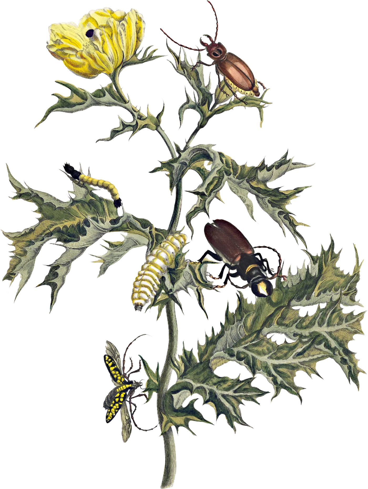
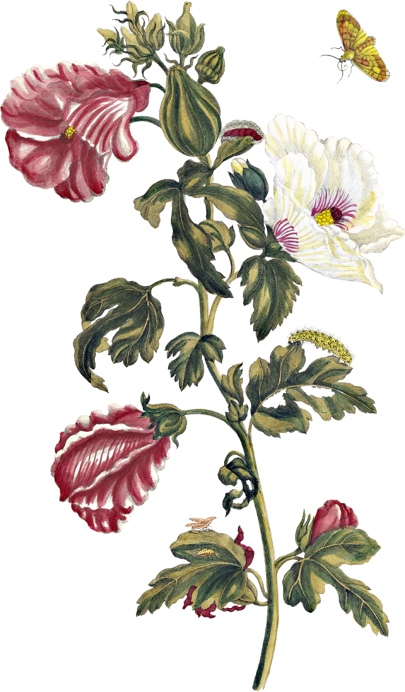

La palabra que encontraste nos adentra en la selva.
Somos pequeños manantiales, delicados, palpitantes
La naturaleza salvaje impone una forma de ver el mundo que puede entenderse como caótica por ser orgánica e impredecible. Pero nos hemos acostumbrado a que el orden racional está dado por mantener una mirada que pasa por el plano, la línea y el punto y esa es la forma en que se organiza el espacio. Esto nos dibuja un mundo que está encerrado en esas dimensiones: paredes, andenes, calles, mesas, sillas, que nos permite navegar el mundo de acuerdo a unos ejes que parecen inmutables, fijos y de los cuales nos cuesta salir y ver el mundo.
Pero la Selva se organiza alrededor de un no-orden que es diferente a lo que podemos entender como Caos: desorden, lío, confusión. Es más bien la posibilidad porque en el orden hay una organización clara, en dónde hay un principio, un medio y un final, en la Selva eso no puede suceder porque siempre está lo impredecible. Es ese elemento impredecible lo que le da un carácter mágico y místico como el que sentimos estando a su lado.
Hay algo tremendamente paradójico. Creemos que lo natural es lo que obedece a lo que está establecido y no lo es. Nunca lo es. Es justamente lo contrario. Lo natural es lo que menos orden tiene y ese carácter impredecible y natural es lo que me sorprende de usted. Usted es el espíritu de esa Selva cautivadora.
A veces queremos buscar ese orden interno que nos organice, que nos diga lo que tenemos que hacer pero no es natural. Siempre veo esa fuerza brutal que arrasa con todo cuando es impredecible, cuando la veo a la distancia en su casa trabajando desde el sofá o abrazando una gata. Esa es usted: esa fuerza que arrastra y siempre fluye.
A veces (realmente muy seguido) sueño que bailo esta canción con usted en una noche de verano disfrutando un viento que corre suavemente sintiendo la noche.
Come a little bit closer
Hear what I have to say
Just like children sleepin'
We could dream this night away
But there's a full moon risin'
Let's go dancin' in the light
We know where the music's playin'
Let's go out and feel the night